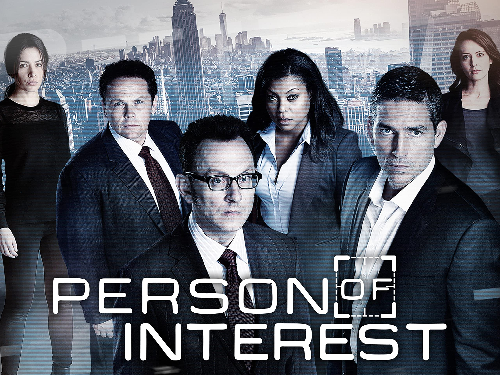

Person of Interest is an American science fiction crime drama[2] television series that aired on CBS from September 22, 2011,[3] to June 21, 2016,[4] with its five seasons consisting of 103 episodes. The series was created by Jonathan Nolan; executive producers were Nolan, J. J. Abrams, Bryan Burk, Greg Plageman, Denise Thé, and Chris Fisher. The series centers on a mysterious reclusive billionaire computer programmer, Harold Finch (Michael Emerson), who has developed a computer program for the federal government known as "the Machine" that is capable of collating all sources of information to predict terrorist acts and to identify people planning them. The series raises an array of moral issues, from questions of privacy and "the greater good", the concept of justifiable homicide, and problems caused by working with limited information programs. Katharine Trendacosta of Gizmodo noted that by the end of the series in 2016, Person of Interest had been transformed from a "crime-fighting show" with an entertaining plot device into "one of the best science-fiction series ever broadcast".[5] The show won the 2012 People's Choice Award for Favorite New TV Drama and the 2016 People's Choice Award for Favorite TV Crime Drama.
